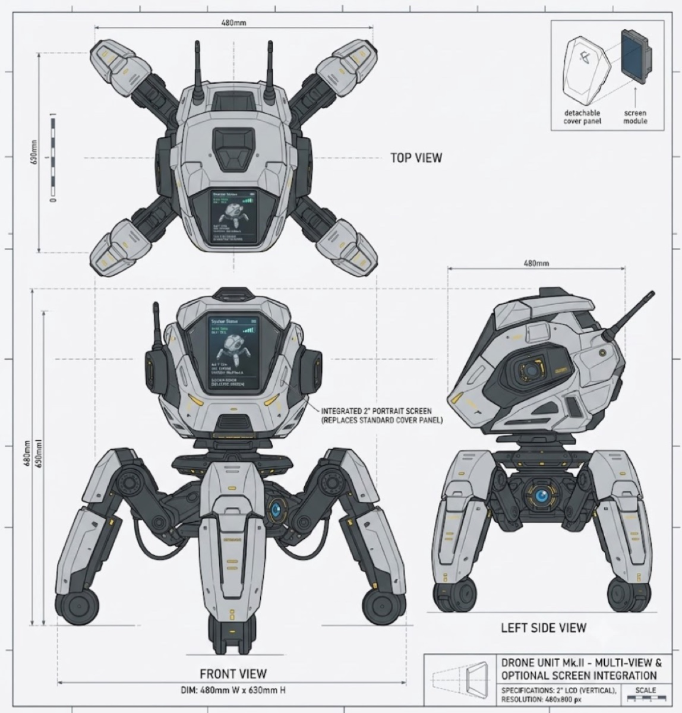
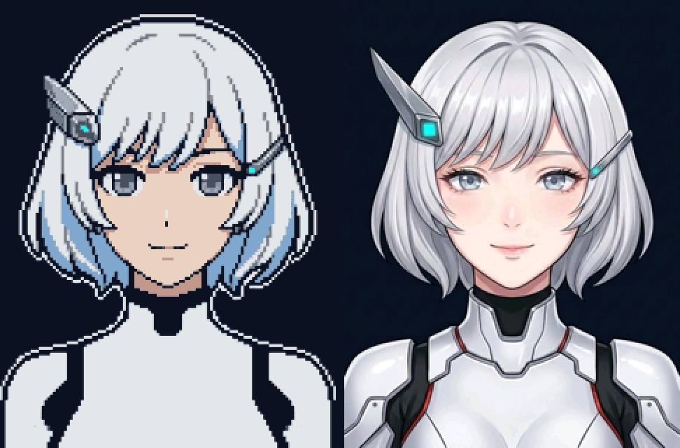
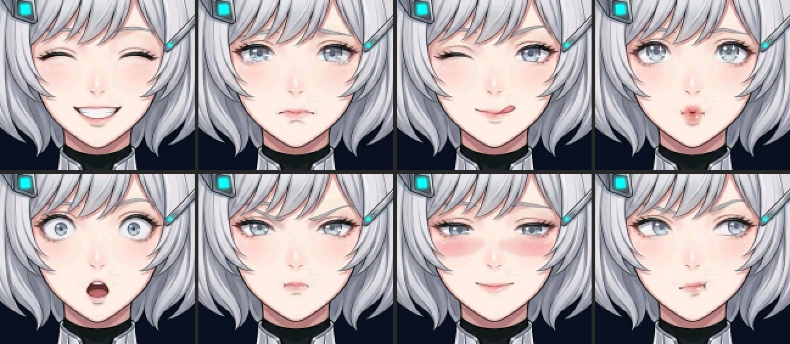

From AI concept to physical robot
ENCO-02 was built using an AI-accelerated hardware workflow: starting from a rough mental sketch of a four-legged sci-fi desk mech with a vertical screen face, using image generation to lock in the orthographic proportions, and then engineering every mechanical joint, servo mount, and circuit board to make the physical robot match the concept 1:1.
Embodied desktop companion
A smart speaker can answer questions, but it cannot turn its head, look at you, or wince at an alert. The goal was a spider-mech companion with a face, a 3-axis neck, and a camera eye.
AI-generated orthographic sheet
Prompted generative AI to produce a multi-view engineering sheet (Top, Front, Left Side) with a 2" vertical LCD module replacing the front cover panel, four wheeled legs, and dual antennas.
Parametric modeling & FDM printing
Translated the 2D orthographic views into multi-part 3D CAD geometry with internal brackets for 3 neck servos, an OV2640 camera turret on the crown, and multi-color grey/black/yellow PLA armor.
Dual-ESP32 firmware & AI brain
Wired the 240×320 SPI LCD, 3× MG92B servos, audio codec, ESP32-CAM vision module, and custom C++ firmware — turning a static render into a talking, seeing, smart-home-controlling robot.

520 KB SRAM, no PSRAM — bye, pixel version
The main controller is an ESP32-D0WD-V3 with 520 KB SRAM, zero PSRAM, and 4 MB Flash. During live voice conversation (Wi-Fi + TLS + Opus audio + LVGL), free heap drops to ~20 KB and the largest contiguous memory block hit a low of 2,036 bytes.
Originally, the character face used a 16-color indexed bitmap (LV_COLOR_FORMAT_I4) which
looked posterized with harsh 1-px stair-stepped outlines. To replace it with a smooth, high-detail
Korean-manhwa-style character without touching a single byte of heap:
- Zero-RAM flash streaming — Built an offline asset pipeline (
build_face_assets.py) that aligns expression layers at 2× resolution, feathers alpha edges, and compiles the base portrait + 33 animated sprites (595 KB total) into.flash.rodataas native 16-bit RGB565 arrays drawn straight from flash. - Audio-driven lip-sync & jaw motion — Rather than animating from network state, the mouth and jaw sprites track the real speaker output buffer and close within 200 ms of silence.
- Living micro-animations — Randomized natural blinking (open → half → shut → half → open over ~240 ms every 2.4–6 s) plus multi-frame bangs and side-lock hair breeze.
- 9 voice-triggered & LLM-synced emotions — Responds to 21 server mood tags and direct voice commands (happy, sad, wink, pout/嘟嘴卖萌, surprised, angry, shy, thinking, neutral).


Camera integration, vision & voice-to-action
Because a single VGA JPEG frame (25–40 KB) is 15× larger than the main board's free contiguous heap
during speech, vision is offloaded to an AI-Thinker ESP32-CAM (OV2640 + 4 MB PSRAM)
mounted in the crown turret above the visor. The two boards talk over a cross-wired UART link
(GPIO 13/14 ↔ GPIO 18/19) using a static 192-byte line buffer with zero runtime allocation:
"这是什么?" visual recognition
Ask what you are holding: the screen opens a live preview, freezes the frame on SHOT, uploads directly from the ESP32-CAM to the vision model, and speaks the answer aloud.
10 FPS sci-fi HUD viewfinder
Switches UART dynamically from 115200 to 921600 baud to stream 224×160 MJPEG frames with a hardware-painted reticle, blinking REC ●, and picture-in-picture ENCO avatar.
3-axis head & 1-finger tracking
Smooth ease-in/ease-out servo control across pitch, yaw, and roll. Hold up one finger or say "看着我" to lock head tracking onto you; pauses ambient head bobbles automatically.
Voice timers, toast alerts & volume
Set countdowns (T-MINUS bar) and on-screen reminder toasts that auto-dismiss, toggle scrolling subtitles, and adjust persistent NVS-backed speaker volume by voice.
Smart home: swimming pool & spa control
Storing cloud OAuth tokens or running heavy TLS JSON parsers on a microcontroller with 2 KB of free
heap is both brittle and a security risk. Instead, ENCO-02 uses a local Home Bridge
running on a Mac (`tools/home_bridge/bridge.py`) that holds the iAquaLink credentials in
a git-ignored local .env and exposes a compact, hardened endpoint on the LAN:
- Voice status & live HUD card — Say "泳池状态" or "Pool status" to display a live on-screen telemetry card while ENCO-02 reads water and target temperatures aloud.
- Full equipment control — Voice commands toggle the filter pump (
pool_pump), spa mode (spa_pump), pool & spa heaters, cleaner, and lights, or set target temperatures (pool70–90 °F, spa80–104 °F) with read-back verification. - Authenticated LAN protocol — Every request between the bridge and robot is signed with
HMAC-SHA256+ a one-time nonce, rate-limited to 20 req/min, and restricted to an explicit device/temperature allow-list.
System architecture
Hardware & memory budget
| Subsystem | Hardware / Allocation | Engineering Notes |
|---|---|---|
| Main MCU | ESP32-D0WD-V3 (240 MHz) | 520 KB SRAM, no PSRAM, 4 MB Flash (app0 = 3.97 MB) |
| Vision MCU | AI-Thinker ESP32-CAM | OV2640 sensor + 4 MB PSRAM; linked via UART2 (GPIO 13/14 ↔ 18/19) |
| Display | 2.0" Portrait SPI LCD | 240×320 resolution, 16-bit RGB565, LVGL with zero-RAM flash sprite streaming |
| Character Art | 595 KB in .flash.rodata | Base portrait + 33 sprites (blinks, jaw lip-sync, hair sway, 8 expressions) |
| Neck Actuation | 3× MG92B Metal-Gear Servos | 3-DOF head (pitch, yaw, roll) on GPIO 0 / 25 / 26 with smooth easing |
| Chassis | Multi-color PLA (FDM) | Modeled from AI orthographic blueprint; 4 wheeled legs + dual rear antennas |